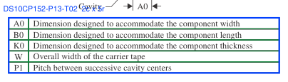
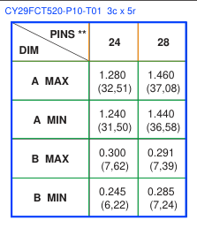

MICRF103 p1
3c x 2r (header 1) · ordering_information · visual 3 (printed)
symbol, condition, value
Ordering Information; right column of page 1
accepted

MICRF103 p2
3c x 9r (header 1) · pin_functions · visual 3 (printed)
pin, name, description
Pin Description
accepted

MICRF103 p3
6c x 30r (header 1) · electrical_characteristics · visual 6 (implied_outer)
symbol, condition, min, typ, max, unit
Electrical Characteristics; the Symbol and Units columns have no drawn side rules, so the outer boundaries are implied by the horizontal-rule extents (46.8-586.8); the five internal separators are printed
accepted

DS10CP152 p2
4c x 8r (header 1) · pin_functions · visual 4 (printed)
name, pin, value, description
PIN DESCRIPTIONS
accepted

DS10CP152 p3
2c x 21r (header 0) · absolute_maximum · visual 2 (partial)
name, value
Absolute Maximum Ratings; headerless two-column list with group rows; the centre rule spans only some row bands
accepted

DS10CP152 p3
5c x 4r (header 1) · recommended_operating · visual 5 (printed)
unknown, min, typ, max, unit
Recommended Operating Conditions; first column has no printed label
accepted

DS10CP152 p4
7c x 27r (header 1) · electrical_characteristics · visual 8 (partial)
symbol, name, condition, min, typ, max, unit
DC Electrical Characteristics; the 346.1 rule exists only in a body condition band, so it is a visual boundary but not a logical column
accepted

DS10CP152 p5
7c x 25r (header 1) · electrical_characteristics · visual 8 (partial)
symbol, name, condition, min, typ, max, unit
AC Electrical Characteristics; the 363.1 rule spans only the lower body rows, so it is a visual boundary but not a logical column
accepted

DS10CP152 p7
4c x 5r (header 1) · other · visual 4 (printed)
condition, condition, value, value
Table 1. Switch Configuration Truth Table
accepted

DS10CP152 p7
4c x 5r (header 1) · other · visual 4 (printed)
condition, condition, value, value
Table 2. Output Enable Truth Table
accepted

DS10CP152 p11
10c x 5r (header 1) · ordering_information · visual n/a (not_printed)
value, value, value, value, value, value, value, value, condition, value
PACKAGING INFORMATION (landscape); no internal vertical rules, so the logical columns come from the printed header labels only and the table is excluded from visual boundary exactness
accepted

DS10CP152 p13
13c x 2r (header 1) · other · visual 13 (printed)
symbol, value, value, value, value, value, value, value, value, value, value, value, value
Tape and reel dimensions
accepted


DS10CP152 p13
2c x 5r (header 0) · other · visual 2 (printed)
symbol, value
Headerless dimension-description table under the TAPE DIMENSIONS figure; all cell borders are axis-aligned quadrilateral outlines (qu), so component: null builds the ruling from those edges; rows A0/B0/K0/W/P1
accepted

DS10CP152 p14
8c x 2r (header 1) · other · visual 8 (printed)
symbol, value, value, value, value, value, value, value
Tube dimensions
accepted

DS10CP152 p15
9c x 3r (header 1) · other · visual 9 (printed)
symbol, value, value, value, value, value, value, value, value
Tray dimensions
accepted

CY29FCT520 p4
8c x 8r (header 2) · recommended_operating · visual 4 (printed)
unknown, min, typ, max, min, typ, max, unit
recommended operating conditions; four printed bands (left band, two device groups, unit); MIN/NOM/MAX inside each group have no printed separators and are logical columns derived from the header labels
accepted

CY29FCT520 p4
9c x 27r (header 2) · electrical_characteristics · visual 6 (partial)
symbol, condition, min, typ, max, min, typ, max, unit
electrical characteristics; the 173.2 rule covers only a condition sub-band, and the MIN/TYP/MAX splits are header-label-derived
accepted

CY29FCT520 p5
9c x 14r (header 2) · electrical_characteristics · visual 7 (partial)
symbol, condition, min, typ, max, min, typ, max, unit
electrical characteristics (continued); two body-only condition sub-rules are visual boundaries, not logical columns
accepted

CY29FCT520 p6
7c x 7r (header 2) · recommended_operating · visual 5 (partial)
unknown, condition, min, max, min, max, unit
timing requirements, ATDMB/BTDMB groups; the 289.8 Data/I rule is body-only, and the MIN/MAX splits are header-label-derived
accepted

CY29FCT520 p8
12c x 5r (header 1) · ordering_information · visual n/a (not_printed)
value, value, value, value, value, value, value, value, value, condition, value, value
PACKAGING INFORMATION (landscape); no internal vertical rules, boundaries come from the printed header labels only
accepted


CY29FCT520 p10
3c x 5r (header 1) · other · visual 3 (printed)
symbol, value, value
PINS/DIM dimension table printed inside the package drawing; the top-left header cell is diagonally split (PINS ** over the pin-count columns, DIM over the dimension column); rows A MAX / A MIN / B MAX / B MIN
accepted

MICRF103 p1
NEGATIVE · schematic
Figure 1 Typical Application; extent drawn from the rendered figure
accepted

MICRF103 p4
NEGATIVE · schematic
Test Circuit figure; extent drawn from the rendered figure
accepted

DS10CP152 p1
NEGATIVE · prose
FEATURES and DESCRIPTION text bands; APPLICATIONS starts at y=338, so the box stops before it
accepted

DS10CP152 p6
NEGATIVE · schematic
Figure 1 AC Test Circuit; extent drawn from the rendered figure
accepted

DS10CP152 p13
NEGATIVE · drawing
TAPE DIMENSIONS figure; the box stops at y=208 because the real headerless dimension table (P13-T02) starts at y=213.4
accepted

CY29FCT520 p1
NEGATIVE · pin_diagram
pinout drawing (top view and side view)
accepted

CY29FCT520 p2
NEGATIVE · schematic
PIPELINE INSTRUCTION TABLE block diagram
accepted

CY29FCT520 p10
NEGATIVE · drawing
package drawing; contains the positive PINS/DIM table island at [414.4, 123.2, 543.7, 267.2], which is excluded from negative FP when matched
accepted